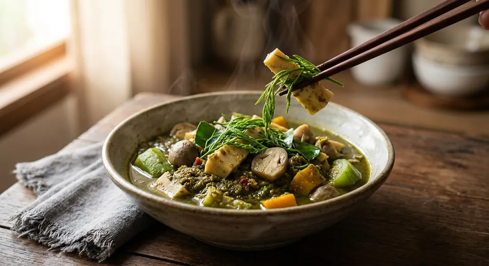

Bamboo shoots in bai ya nang leaf water, a pounded chilli paste, pounded rice and pla ra — green, fiery, and the curry Isaan eats with sticky rice.

แกงหน่อไม้ is named for its engine: nor mai, the bamboo shoot — but every Isaan kitchen adds the second half of the name, ใบย่านาง, the bai ya nang leaf, whose crushed, strained water becomes the entire broth. Kapook explains the pairing as food lore with a rule: bamboo shoots are hot in the Thai humoral system and eaten in quantity they bloat the stomach, so they must be countered with bai ya nang, which is cold. That is why, as Kapook puts it, the shoot and the leaf became inseparable.
The curry's colour is its own in-joke. Kapook's version confesses outright that the bowl "looks unappetising" — a cloudy, khaki green — and promises that the first spoon converts you anyway. The texture is where the cooks diverge: Wongnai's is thin and clear, nothing in it but shoots and herbs, while most pot-makers stir in ข้าวเบือ, raw sticky rice soaked and pounded to a slurry that thickens the broth softly — and, as Pim's kitchen blog notes, even tames the bitterness of bitter curries like gaeng wai.
The seasoning engine is pla ra, the fermented fish paste of the region — Kitty Chef's Pantip recipe states the rule plainly: the pla ra alone carries the pot, no fish sauce needed. Everything else in the bowl is vegetables and wild greens, and it is not a starter but the main event, eaten with a bamboo basket of hot sticky rice and, in Wongnai's version, grilled chicken on the side.
| Thai | English | Amount |
|---|---|---|
| หน่อไม้สด | Fresh bamboo shoots | 1 head |
| น้ำใบย่านาง | Bai ya nang water | 500 ml |
| เห็ดฟาง | Straw mushrooms | 100 g |
| บวบ | Angled gourd | 100 g |
| ฟักทอง | Pumpkin | 100 g |
| ตะไคร้หั่น | Lemongrass, sliced | 2 small stalks |
| หอมแดง | Shallots | 7 heads |
| พริกสด | Fresh chillies | 15–20 |
| ข้าวเบือ | Khao buea (soaked sticky rice) | 1 tbsp |
| ชะอม | Cha-om (acacia shoots) | 1 cup |
| ใบมะกรูด | Kaffir lime leaves | 5 leaves |
| ใบแมงลัก | Lemon basil | 1 cup |
| น้ำปลาร้าต้มสุก | Boiled pla ra | 5 tbsp |
| น้ำปลา | Fish sauce | 1 tbsp |
| ผงชูรส | Seasoning powder (MSG) | 1 tsp |
The mushroom pot (Pim, ครัวบ้านพิม): weights for a family batch — 20 bai ya nang leaves blended with half of 3 cups water, 5 shallots (60 g), 25–30 Karen chillies, 3 large lemongrass stalks, 170 g pre-boiled bamboo shoots, 120 g pumpkin, 160 g mixed mushrooms plus 110 g wood ear, 30 g cha-om, 30 g lemon basil, ½ cup pla ra, 2 tbsp fish sauce and 2 tbsp raw sticky rice soaked 1–2 hours for the khao buea. The thin bowl (Wongnai): no rice at all — 1 fresh shoot, 500 g bai ya nang leaves blended in 2 litres of water, 3 sliced shallots, 3 stalks sliced lemongrass, 10 red jinda chillies (half pounded, half whole), 1 cup pla ra and 1 cup lemon basil; boiled until the shoot loses its bitterness, served with sticky rice and grilled chicken. Kitty Chef's rule (Pantip via Kapook): pound the khao buea fine, pound chillies and shallots coarse, and let the pla ra alone do the seasoning — no fish sauce.
To thicken or not. Wongnai's version is thin and clear — no rice anywhere in it. Kapook's basic recipe pounds soaked sticky rice into the paste. Kitty Chef, Aroifin and Pim use khao buea pounded separately, and even the soak time splits: Aroifin says 10–15 minutes, Pim 1–2 hours. The curry is genuinely made all three ways.
The garlic. Only Pim raises it: some regions pound garlic into the paste, and her friends' households in Surin and Loei do not — a regional split she files under "no drama". None of the other four pastes include garlic.
The lemongrass. Wongnai slices it into the paste; Pim cuts it short and drops it into the pot, noting that some cooks slice it small and pound it in with the paste instead; Kapook's basic recipe bruises it — and left it off the ingredient list entirely.
Kaffir lime leaves. Aroifin alone adds five leaves near the end of the cook. The other four recipes never touch them.
The seasoning. Kitty Chef is categorical: pla ra alone seasons the pot — no fish sauce ("แค่น้ำปลาร้าก็เอาอยู่"). Wongnai agrees, seasoning with nothing but pla ra. Aroifin and Pim add fish sauce on top, and Aroifin a spoon of seasoning powder besides. Kapook's basic recipe goes furthest, marking the pla ra itself optional.
The bai ya nang. Wongnai and Pim blend the leaves with water and strain through muslin; Kapook and Pim's traditional option crush them hard by hand in a big basin of water; Pim notes that in Isaan markets you can simply buy the ready-squeezed water in bags. Same broth, three levels of effort.
This recipe is translated from the following Thai-language sources. Where they disagree, we've said so.
1. Aroifin — "วิธีทำ แกงหน่อไม้ เมนูอาหารอีสาน ทำง่าย ๆ แซ่บนัวถึงเครื่อง!" by BAHMII (the recipe used here) — aroifin.com
2. Wongnai — "แจกสูตรฟรี 'แกงหน่อไม้ใส่ใบย่านาง' แกงอีสานเผ็ดร้อน รสแซ่บน้ำลายสอ!" (the thin, clear version and the parboil test) — wongnai.com
3. Kapook — "แกงหน่อไม้ใบย่านาง อาหารอีสานสุดแซ่บ ประโยชน์เพียบ" (the hot/cold food-lore pairing and the colour confession) — cooking.kapook.com
4. Kapook — "แกงหน่อไม้ใบย่านาง ใส่ข้าวเบือน้ำข้นรสเข้มเผ็ดร้อนอร่อยยกหม้อ" by Kitty Chef, Pantip member (the pla-ra-only rule) — cooking.kapook.com
5. Pim @ ครัวบ้านพิม — "แกงหน่อไม้ใส่เห็ด (อิสาน)" (the khao buea soak, the garlic regionalism and the herb prep) — pim.in.th